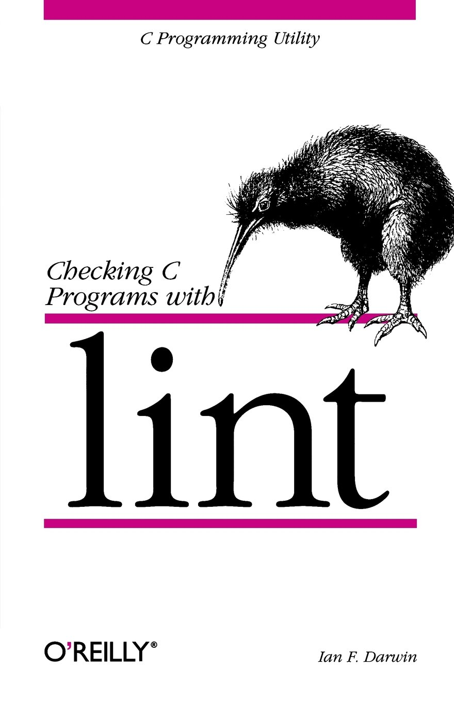
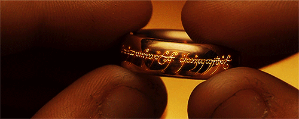

<!-- .element: data-state="first-slide" --> ## Hooks de pre-commit pour git  ## Bonjour ! <div style="display: flex; align-items: center"> <img src="avatar.jpg" alt="Une image d'avatar" style="border: none; width: 30%; height: 30%; margin-right: 2rem"> <div style="display: flex; flex-direction: column; text-align: left"> <p>**Lucas Cimon**</p> <p><i class="fa fa-map-marker"></i> [Voyages-Sncf.com Technologies](https://open.voyages-sncf.com)<br>@ Nantes</p> <p><i class="fa fa-pencil"></i> https://chezsoi.org + <i class="fa fa-rss"></i> [<img src="shaarli-icon.png" style="margin: 0; width: 3rem">](https://chezsoi.org/shaarli)</p> </div> </div> ## pre-commit ?? Extrait de [git-scm.com](https://git-scm.com/book/fr/v1/Personnalisation-de-Git-Crochets-Git) > "Le crochet pre-commit est lancé en premier [...]. Il est utilisé pour inspecter l'instantané qui est sur le point d'être validé, pour vérifier si vous avez oublié quelque chose, pour s'assurer que les tests passent ou pour examiner ce que vous souhaitez inspecter dans le code." ## L'aïeul `lint`: - existait déjà [1979](http://web.cuzuco.com/~cuzuco/v7/v7vol1.pdf) - vérifiait du code C  ## Casse-pied ? <figure> <img src="CommitStrip-2015-09-18.jpg" alt="CommitStrip du 2015/09/18" style="width: 140%"> <figcaption><small><a href="https://www.commitstrip.com/fr/2015/09/18/pre-commit-hook-some-are-more-equal-than-others/">CommitStrip du 2015/09/18</a></small></figcaption> </figure> Note: - à VSCT, avaient initialement une mauvaise réputation - 2 questions: * qui en a déjà utilisé ? * à qui ça a déjà cassé les pieds ? ## Pourquoi les utiliser ? - assurance qualité - gain de temps - historique `git` plus propre - validation côté client **ET** serveur <div class="fragment">  <br> + _"un outil pour les gouverner tous..."_ </div> Note: - QA: code style, tests, bugs finding ## Pourquoi celui-ci ? <div style="display: flex; justify-content: center"> <img alt="pre-commit logo" src="pre-commit-logo.png" style=" margin: 2rem; height: 8rem; width: 8rem"> <div style="display: flex; flex-direction: column; justify-content: center"><!-- style="white-space: pre"--> <a href="http://pre-commit.com">pre-commit.com</a> <small>par Anthony Sottile</small> </div> </div> <ul> <li class="fragment">en Python <span style="font-size: 1.8rem">(alt: [overcommit](https://github.com/brigade/overcommit) en Ruby, [git-hooks](https://github.com/git-hooks/git-hooks) en Go)</span></li> <li class="fragment">une [bibliothèque](http://pre-commit.com/hooks.html) de **126** _hooks_, dont: `autopep8`, `flake8`, `prettier`, `prospector`, `pylint`, `yapf`...</li> <li class="fragment">5 lignes pour **créer** un nouveau _hook_</li> <li class="fragment">projet open-source très actif</li> </ul> Note: - nom pas top -> je vais l'appeler "pre-commit Python" - historiquement développé à Yelp ## Fonctionnement (1/2)  Note: Etapes d'installation (en cache local): 1. la configuration est lue 2. les repos `git` contenant les _hooks_ en Python / Go / NodeJS / Ruby / Swift / Docker sont clonés 3. les éventuelles `additional_dependencies` sont installées (pour Python: dans un `venv`) ## Fonctionnement (2/2) **Exécution:** - les modifications non indexées de fichiers sont remisées (`git stash`) - les fichiers modifiés sont passés aux _hooks_, selon: * le `type` du _hook_: `text`, `executable`, `python`... * si leur nom correspond à la _regex_ `files` du _hook_ Note: == ce qui se passe au `git commit` ## Démo <span id="hook-text" class="nestedarrow">hook</span> <!-- We use reveal.js .nestedarrow CSS class that is hidden in PDF export --> <img id="captain-hook" src="Piratey-from-wikimedia.png" alt="Capitaine Crochet" style="max-height: 30rem"> <svg id="svg-canvas" style="position:absolute;top:0px;left:0px" width="1280" height="590" xmlns:xlink="http://www.w3.org/1999/xlink" class="nestedarrow"> <!-- M = moveto X Y C = Bezier Curve XctrlPt1 YctrlPt1 XctrlPt2 YctrlPt2 Xdest Ydest --> <path d="M 150 260 C 320 260 150 460 320 460" fill="none" stroke="#D05" stroke-width="3"></path> <!-- src/dest -- > <circle cx="150" cy="260" r="5" fill="#D05"></circle><!----> <circle cx="320" cy="460" r="5" fill="#D05"></circle> <!-- ctrl points -- > <circle cx="320" cy="260" r="5" fill="green"></circle> <circle cx="150" cy="460" r="5" fill="green"></circle><!----> </svg> Note: montrer contenu du YAML ## Installation ```bash pip install pre-commit # -> donne accès à la commande `pre-commit` pre-commit install # -> génère .git/hooks/pre-commit ``` ## CLI basics ```bash pre-commit run $hook_id # -> exécute un unique hook sur tous les fichiers "addés" pre-commit run --files $file1 $file2 # -> exécute tous les hooks sur des fichiers spécifiques pre-commit run --all-files # -> exécute tous les hooks sur tous les fichiers versionnés ``` ## Local hooks ```ruby - repo: local hooks: - id: check-bash-syntax name: Check Shell scripts syntax corectness language: system entry: bash -n files: \.sh$ ``` ## Bonus [Intégration continue](http://pre-commit.com/#usage-in-continuous-integration) **super** simple. `.travis.yml` ```ruby language: python python: "3.6" install: pip install pre-commit script: pre-commit run --all-files ``` Note: ! hooks nécessitant Go/NodeJS/Java ## Bonus `pre-commit autoupdate` → modifie `.pre-commit-config.yaml`<br>avec dernier tag ## Support Windows ? - Cygwin, MSYS2, Git For Windows, Windows 10 bash<br><span style="color:LimeGreen">→ **100%**</span> supporté - TortoiseGit: ☹ Note: pour Cygwin, j'ai testé les hooks Go & NodeJS ## Astuces <i class="fa fa-ban"></i>😦<i class="fa fa-ban"></i> `git commit --no-verify` `export SKIP=$hook_id1,$hook_id2` <div class="fragment"> <hr> pour inspecter les repos / venv des hooks: `~/.cache/pre-commit/` </div> Note: cf. aussi [fonctions shell](https://github.com/Lucas-C/pre-commit-hooks/blob/master/README.md#handy-shell-functions) ## En résumé <ul> <li><span style="color:#2aa198">**simple d'utilisation**</span></li> <li><span style="color:#dc322f">**puissant**</span></li> <li><span style="color:#6c71c4">**rapide à mettre en place**</span></li> </ul>